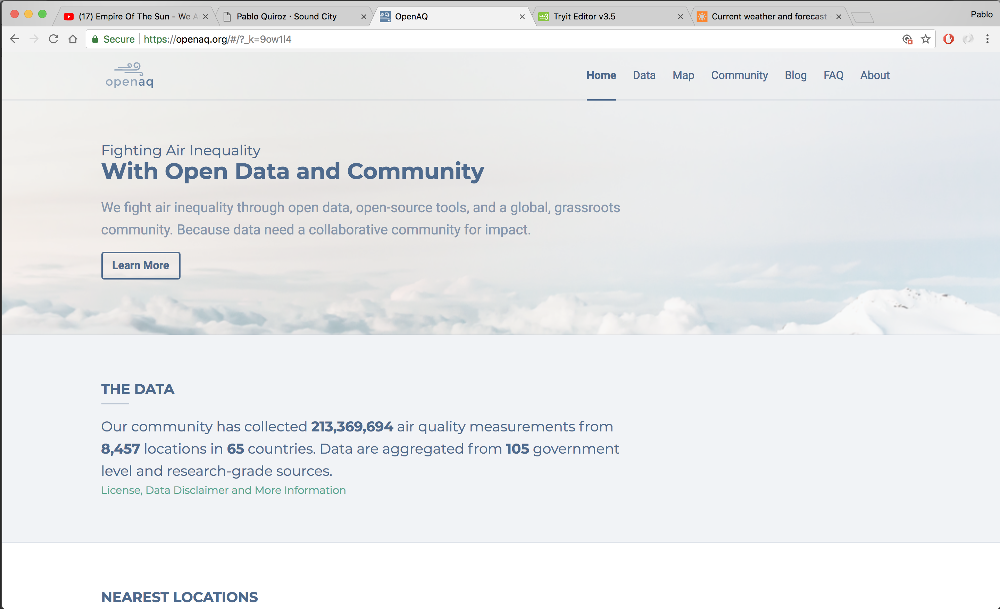
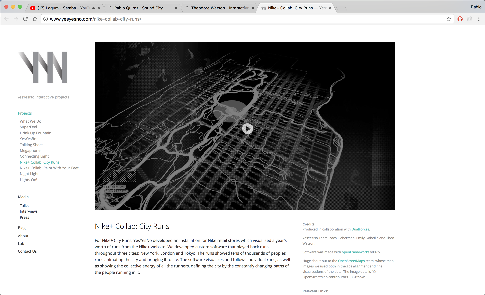

Open AQ es un sitio web esta diseñado para mostrar los distintos niveles de smog que existen en distintos paises. Además cuenta con datos api para todos.Inequaligram es un proyecto de Lev Manovich el cual muestra las zonas de mayor concentración de los sistemas de geolocalización de redes sociales. Creando, el concepto de zonas más ricas y más pobres digitalmente. Sound City buscaría representar los datos en una manera similar pero además de tener un sistema de horarios para que el usuario pueda analizar los peaks de esta información.

NIKE + Collab city runs, es un proyecto de Zach Lieberman, Emily Gobeille y Theo Watson. que muestra, visualemente, todas las corridas que se han hecho en la ciudad de Nueva York. Esto es posible mediante dipositivos pertenecientes al IOT. Sound City intentaría apropiarse de esta modalidad en el uso de los datos.
Gobierno de Chile
Proyecto Investigativo
Sound City busca generar una visualización del sonido en la ciudad. Esto puede ser útil para el gobierno al momento de crear nuevos proyectos de urbanismo o de descanso humano. Además de regular el tránsito de vehículos en zonas en donde los decibeles generados exceden el máximo recomendado por la World Health Organization.
Zacarías Pérez
Usuario y Creador de contenido
Sound City también apunta a ser un proyecto comunitario de características open source. Busca que todos puedan ingresar datos de sonido al sistema para crear una visualización entre todos. Juanito Pérez un programador/diseñador de 30 años, además de utilizar sound city para proyectos personales, también se dedica a ingresar datos y alimentar la misma página con información actualizada.
Francisca González
" consumidora" de Sound City
Francisca González, 25, es una persona con estudios universitarios finalizados que esta en busca del mejor departamento. Al momento de arrendar un departamento se asegura de revisar los decibeles máximos de la zona al igual que los mínimos. Para asegurarse que el sonido externo no sea un problema que la cause insomnio o anisedad. Además, se fija en cuanto sonido hay durante su horario de trabajo y en el de descanso. Todo esto para poder asegurarse de tener una vivienda con la mejor calidad de vida posible en una metropolís.